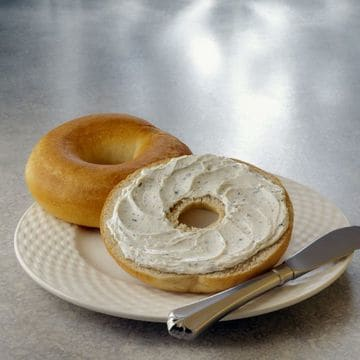

Bagel
A great snack that is easy to make when you are feeling a bit lazy

Ingredients
- 1 bagel
- Cream cheese of choice
Instructions
- Slice bagel in half
- Place each half in toaster
- Grab cream cheese from fridge as well as a plate and butter knife
- Once bagel is done toasting, spread cream cheese along the open side